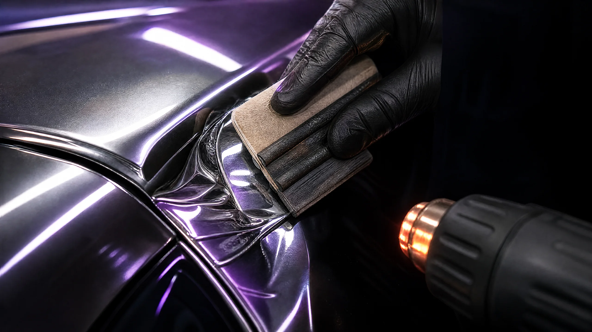
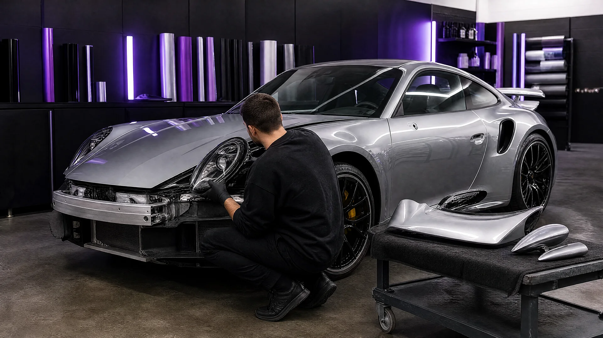

Eingeschlagen. Nicht abgeschnitten.
Eine Folierung sieht nur dann aus wie Lack, wenn die Folie um die Kanten läuft. Dafür kommen Teile ab. Das dauert länger, und genau das sieht man.

1 · Demontage
Stoßstangen, Spiegel, Griffe, Leuchten und Embleme kommen ab. Nur so lässt sich die Folie um jede Kante legen. Alles wird beschriftet und auf gepolsterten Wagen abgelegt.
2 · Reinigen und Auflegen
Erst Wäsche, dann Reinigungsknete und Entfetter, bis kein Wachs und kein Staub mehr auf dem Lack ist. Große Teile wie die Haube werden zu zweit in einem Stück belegt.
Der ganze Ablauf
- 01
Annahme mit Fotos
Wir fotografieren den Lack rundum und notieren Vorschäden. Die Fotos bekommst du aufs Handy.
- 02
Demontage
Anbauteile ab, alles beschriftet.
- 03
Reinigen
Wäsche, Knete, Entfetter. Lackschäden werden vorher besprochen.
- 04
Auflegen
Folie spannungsfrei auflegen, mit der Rakel mit Filzkante von der Mitte nach außen andrücken.
- 05
Einschlagen
Mit Wärme um Kanten und in Falze legen, Kanten sauber schneiden, ohne den Lack zu berühren.
- 06
Nachwärmen
Kanten und gedehnte Stellen auf die Temperatur aus dem Datenblatt bringen, damit die Folie ihre neue Form behält.
- 07
Montage
Alle Teile zurück, Funktionen prüfen.
- 08
Endkontrolle
Mit Lichtleiste jede Fläche prüfen, letzte Fotos, Übergabe mit Pflegehinweisen.
Endkontrolle mit Licht
Eine lange LED-Leiste wird über jede Fläche geführt. Gerade Lichtlinien zeigen, dass nichts eingeschlossen ist. Erst dann geht das Auto raus.
Häufige Fragen
Wie lange ist mein Auto weg?
Für eine Vollfolierung meist drei bis fünf Werktage, je nach Modell und Folie. Chrom dauert länger.
Wird auf meinem Lack geschnitten?
Nein. Geschnitten wird an Kanten, die später verdeckt sind, oder mit Schneideband unter der Folie.
Was ist mit Türfalzen und Einstiegen?
Auf Wunsch folieren wir Einstiege und Falze mit, dann sieht man auch bei offener Tür keinen Originallack.
Welche Folie passt zu deinem Auto?
Drei Fotos genügen. Du bekommst ein festes Angebot.